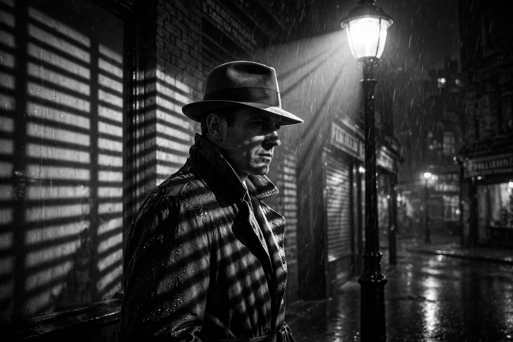

Film noir
From Wikipedia, the free encyclopedia

Film noir (French for 'black film') is a cinematic style and cycle of crime films, mainly American, associated with the 1940s and 1950s. Marked by low-key black-and-white photography, shadowy urban settings, hard-boiled dialogue, femme fatales and morally ambiguous protagonists, classic noirs include Double Indemnity, The Maltese Falcon, Out of the Past and Sunset Boulevard.
Origins and term
French critics, cut off from Hollywood films during the German occupation, coined the term in 1946 on seeing a backlog of dark American crime pictures released at once. The style drew on German Expressionist cinema — many noir directors and cinematographers were émigrés, including Fritz Lang, Billy Wilder and Robert Siodmak — and on American hard-boiled fiction by Dashiell Hammett, Raymond Chandler and James M. Cain.
Style and themes
Noir visual style uses chiaroscuro lighting, venetian-blind shadows, night-for-night exteriors, voice-over narration and flashback structures. Its stories feature private detectives, corrupt police, insurance scams and doomed romances; its worldview — fatalism, paranoia, the instability of identity — is often read as reflecting wartime and Cold War anxiety and the difficult readjustment of veterans.
Later developments
The classic period is usually dated c. 1940–1958, ending with Orson Welles's Touch of Evil. From the 1970s, neo-noir revived the style in colour and contemporary settings: Chinatown, Blade Runner, L.A. Confidential and Drive. Related variants include Nordic noir in television and noir in comics and video games.